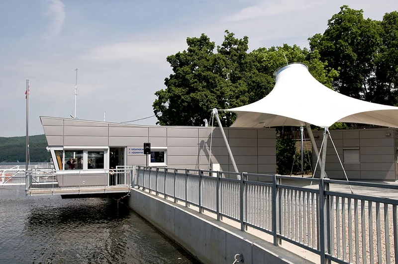
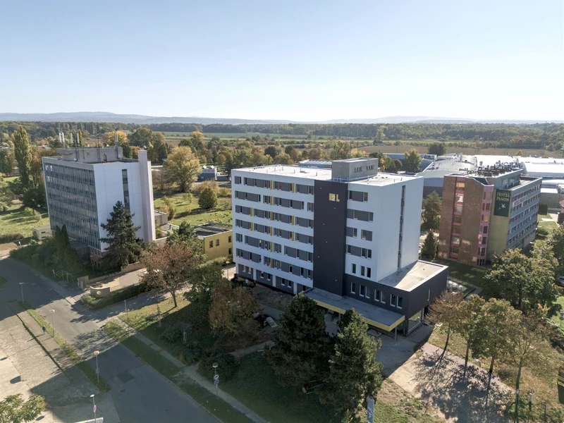
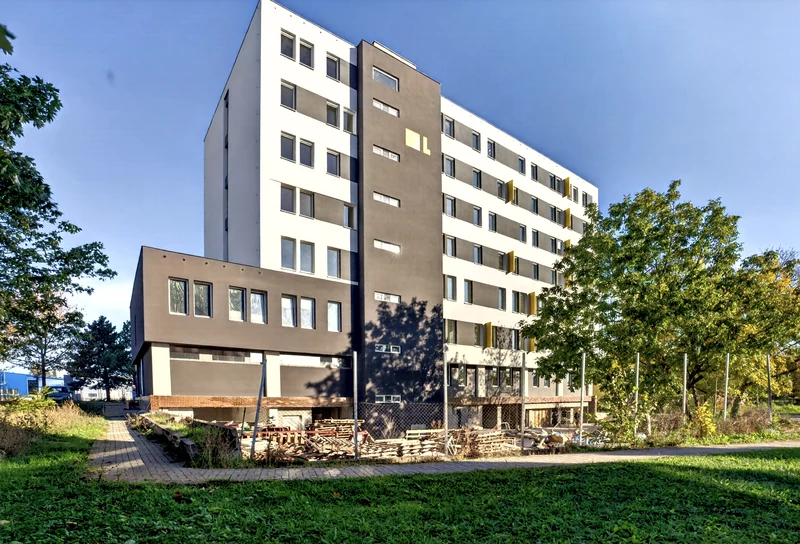

Návrh a povolení
HiARCH rozpracuje záměr do architektonického návrhu a potřebné dokumentace.



CO ZAJIŠŤUJEME
HiARCH připravuje návrhy a povolení. HiPLAN realizuje vlastní developerské projekty. HiREAL se věnuje realitní činnosti a nabývání nemovitostí.
Ilustrační kresba principu · nejde o půdorys konkrétní stavbyVÝBĚR REALIZACÍ A PROJEKTŮ
Filtruj podle typologie a otevři detail projektu pro fotografie a ověřené informace.
Načítám projekty…
PŘÍSTUP
Každá firma má vlastní roli — od prvního návrhu po realitní činnost.
HiARCH rozpracuje záměr do architektonického návrhu a potřebné dokumentace.
TŘI FIRMY · JEDEN PŘEHLED
Architektura, návrhy a povolovací proces.
Realizace vlastních projektů.
Realitní činnost.
Možný průvodce přípravou architektonického návrhu a dokumentace.
Ukázka témat kolem developerských projektů a realitní činnosti.
KONTAKT